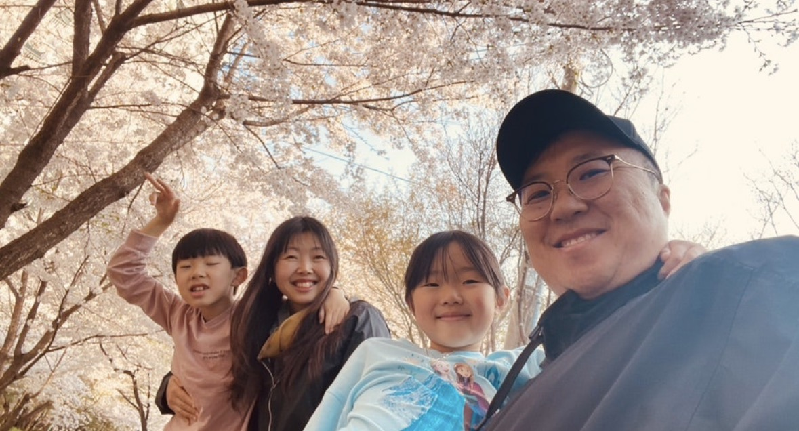
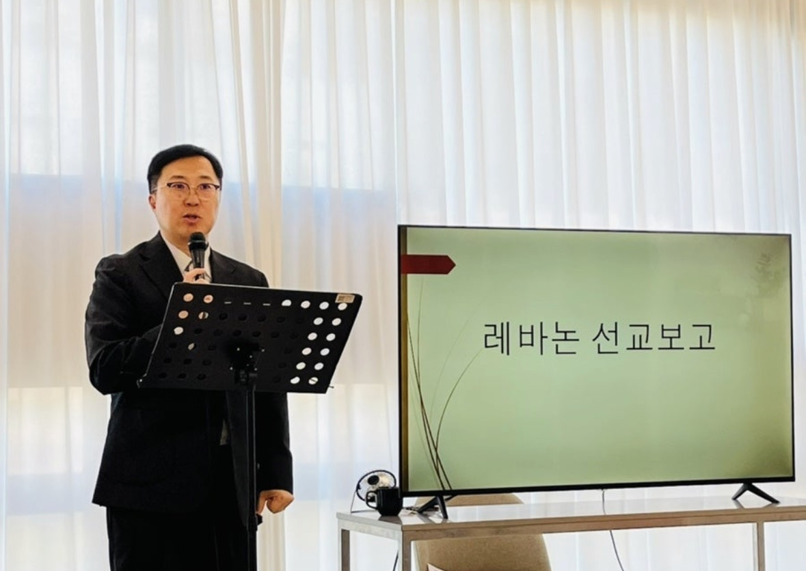
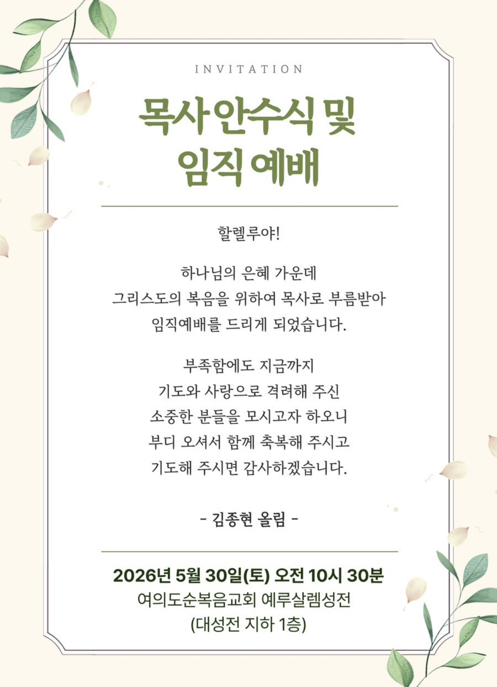
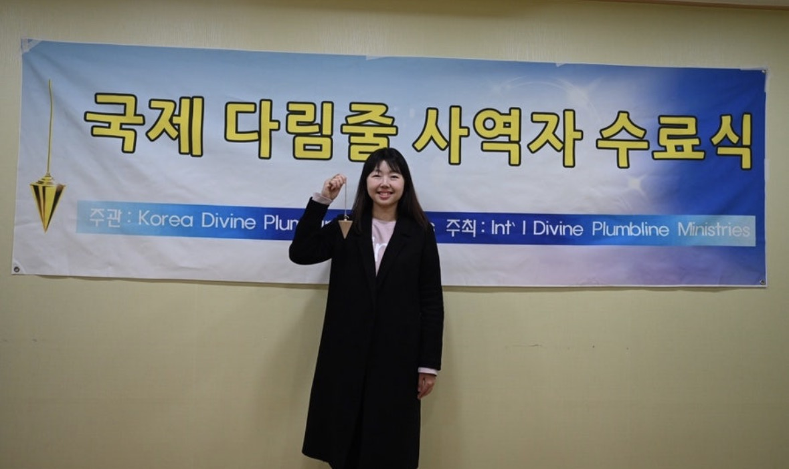
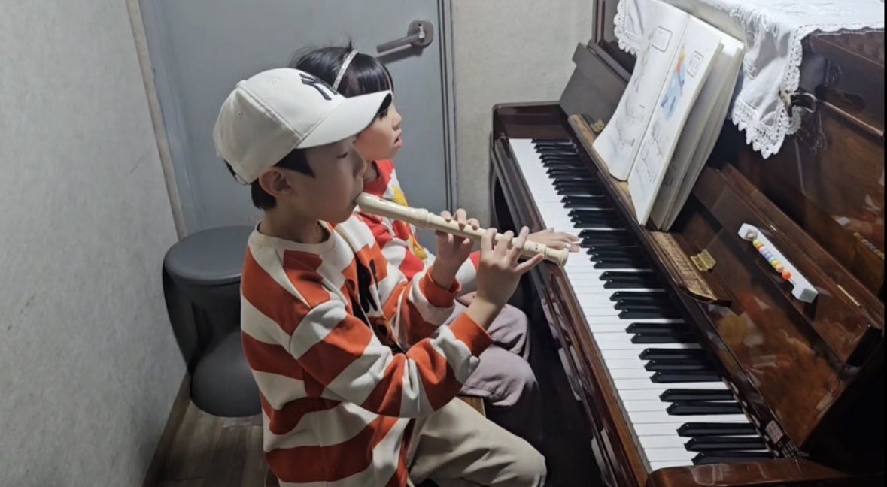

인사말
샬롬, 5월의 인사를 드립니다
السلام عليكم 주님의 평강이 함께하시길
샬롬. 주님의 이름으로 문안드립니다.
주님의 사랑과 은혜, 그리고 말씀이 삶에 임하시길 기도합니다. 한국에 잠시 돌아온 저희 가정이, 벚꽃 핀 봄을 누리며 다시 레바논으로 돌아갈 날을 기다리고 있습니다. 한 송이 꽃잎처럼 짧고 귀한 이 계절에, 사역과 가정의 이야기를 한 통의 편지로 띄웁니다.
한국에서 가을의 단풍을, 봄의 벚꽃을 보여주시며 사계절을 느낄 수 있게 해주신 주님께 감사드립니다. 레바논도 사계절이 있지만 기후상 벚꽃이나 단풍나무는 보기 어려워, 이 봄이 더없이 귀하게 다가옵니다.
속히 전쟁이 끝나, 다시 백향목의 땅으로 돌아가기를 기도해 주세요.
다윗 — 사역 보고
한국에서, 다시 레바논으로
한국에 돌아온 지도 한 달이 넘었습니다. 기회가 주어지는 대로 레바논과 현지 교회, 그리고 저희가 섬기고 있는 쿠르드 민족에 대해 소개하며 기도 요청을 드리며 지내고 있습니다.
레바논 현지 교회는 오히려 연락을 줄여, 현지 성도들이 스스로 하나님께 이끌림 받고 자생할 수 있도록 하고 있습니다.
오로지 주님만 머리 되신 교회 되길,
그것이 저희의 기도입니다.
C채널 기독교 방송에서 작년 말 레바논에 오셔서, 저희 교회와 쿠르드 민족 사역 현장을 함께 촬영한 프로그램이 방영되었습니다. 아래 영상으로 사역 현장을 직접 만나 보세요.
지난 몇 달간 한국의 교회들을 다니며 레바논과 쿠르드 사역을 나누고 있습니다. 강단에 서서 한 자리, 한 자리의 기도를 마주할 때마다, 멀리 떨어진 한 영혼을 향한 주님의 마음을 다시 새깁니다.

5월 30일 — 목사 안수식
하나님께서 길을 열어주셔서, 이번 달 5월 30일(토) 목사 안수를 받게 되었습니다. 모든 것이 주님의 은혜입니다.
앞으로도 하나님의 뜻 앞에 바르게 서며, 깨끗한 하나님의 그릇으로 쓰임 받는 사역자가 될 수 있도록 기도 부탁드립니다.

속히 전쟁이 끝나
레바논으로 돌아가도록 함께 기도해 주세요.
아비가일 — 봄, 그리고 수료
1년 9개월의 길 끝에 서서
오랜만에 아름다운 벚꽃도 보고 피크닉도 가고, 마음껏 봄을 누렸습니다. 재작년에는 가을의 단풍을, 이번에는 봄의 벚꽃을 보여주시며 한국의 사계절을 다 만나게 하신 주님께 감사합니다.
그리고 지난 1년 9개월간 길게 걸어온 국제 다림줄 사역자 과정을 수료했습니다.
알게 된 것도 많지만,
배운 만큼 살아내는 일은 아직 어렵고 훈련이 필요함을 느낍니다.
성경적 상담을 통해 선교지의 많은 영혼들도 주님의 회복과 치유로 이끌 수 있기를 소망합니다. 끝까지 마칠 수 있도록 기도해 주신 분들께 깊이 감사드립니다.

민수 · 지수
처음 만나는 한국의 봄
민수와 지수는 미술과 피아노 학원을 다니고 있습니다. 레바논에는 예체능 수업이 없어서, 처음으로 피아노도 치고 리코더도 즐겁게 배우고 있습니다.
틈틈이 레바논 학교 숙제도 하고, 줌으로 레바논에 있는 선생님과 아랍어 공부도 합니다. 도서관에서 책도 빌려 읽고, 다이소도 가고, 인형뽑기도 하며 한국생활을 마음껏 즐기고 있는 중입니다.
지수가 결막염과 알레르기로 인해 눈이 충혈되고 피부도 두드러기처럼 심하게 올라와서 약을 바르고 있습니다. 깨끗하게 나을 수 있도록 기도해 주세요.

기도제목
함께 기도해 주세요
레바논과 가정, 그리고 5월 30일을 위한 기도
-
중동 전쟁이 속히 종전되도록
-
레바논 교회들이 회개함으로 돌이킬 수 있도록
-
캅엘리아스 교회 & 쿠르드 신앙공동체
- 성령의 강력한 불이 임하시고, 자생하는 교회로 견고히 서도록
- 현지 성도들이 오로지 주님만 머리 되신 교회로 부르심에 응답하도록
-
저희 가정
- 한국에 있는 동안 건강이 회복되고, 주님의 뜻 안에서 잘 보낼 수 있도록
- 지수의 결막염·알레르기가 깨끗이 낫도록
-
이달 목사 안수식의 모든 준비와 진행을 위해서 (5월 30일)
함께하기
이 편지를 함께 나눠 주세요
한 사람의 기도가 레바논의 한 영혼을 살립니다.
기도제목 다시 보기후원으로 동참하기 — 매월 5천원
[은행명] [계좌번호] 예금주: [예금주]
매월 5천원의 정기후원으로 함께해 주시길 부탁드립니다. 후원은 부담 없이, 기도가 우선입니다.